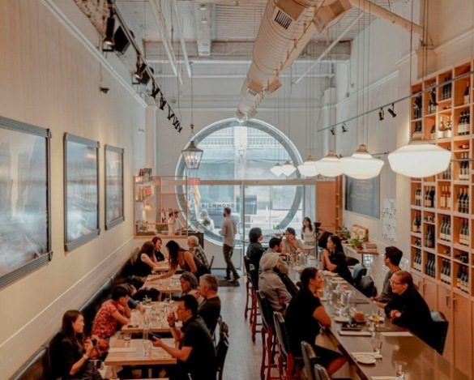

Alo
French • $$$$
Toronto's top-rated tasting menu dining experience.

Byblos
Eastern Mediterranean • $$$
Modern dishes in a stylish dining room.

St. Lawrence Market
Market • $
120+ food vendors including Toronto's famous peameal bacon sandwich.

Pai Northern Thai Kitchen
Thai • $$
Toronto's favourite spot for authentic Thai street food.

Richmond Station
Farm-to-Table • $$$
Innovative dishes using locally sourced seasonal ingredients.

Ramen Isshin
Japanese • $$
Famous for its rich and creamy tonkotsu ramen.

Canoe
Canadian Fine Dining • $$$$
Elevated Canadian cuisine with breathtaking skyline views.

Kensington Market Food Tour
Multi-Cultural Food Tour
Explore global flavours from empanadas to churros.